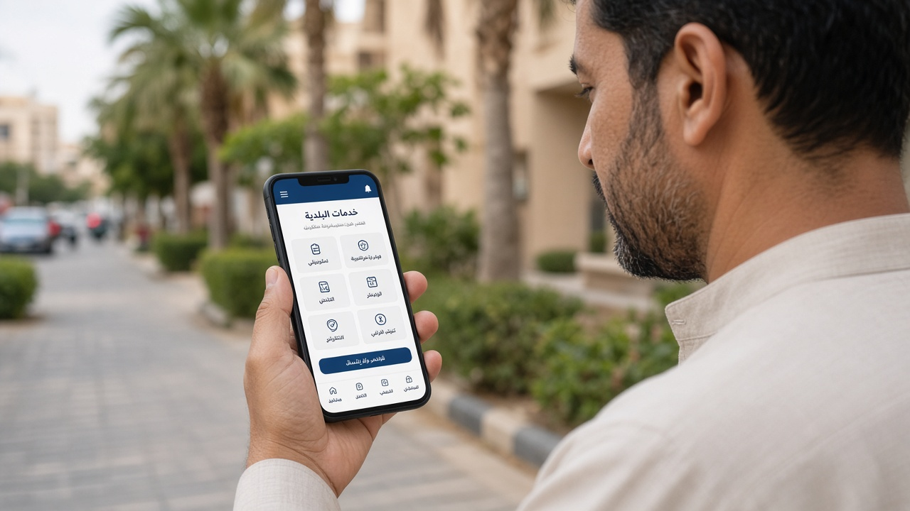
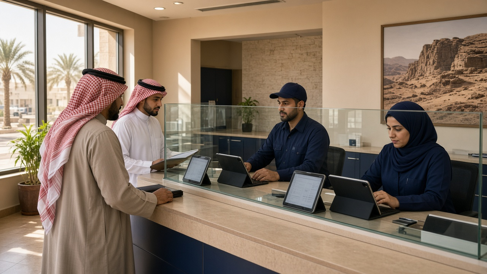
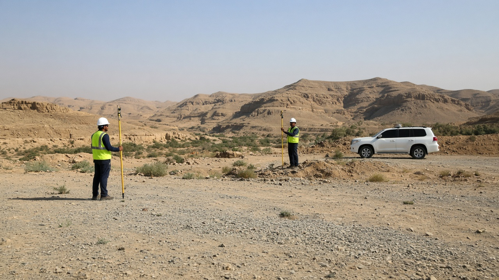
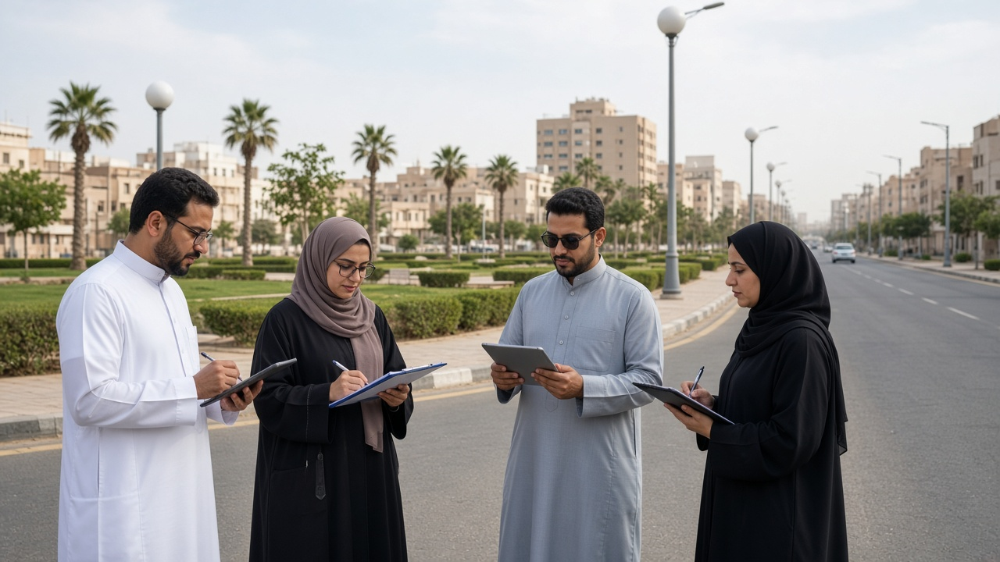
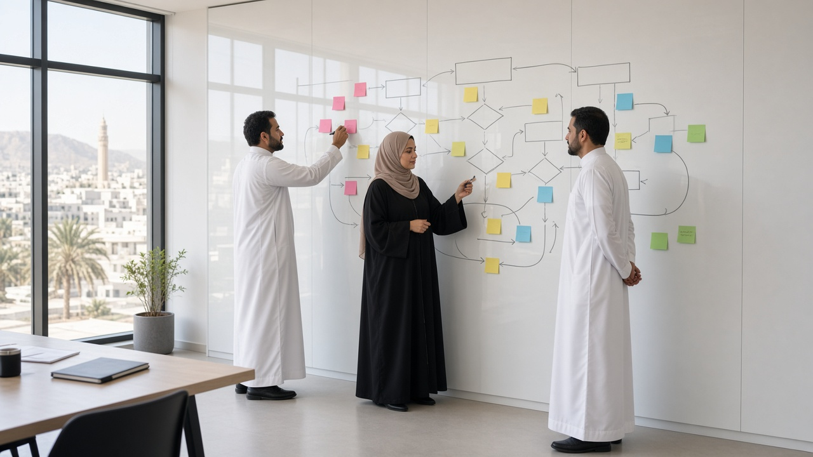

تابع تقدّم المشاريع على الخريطة
نسب الإنجاز والحالة والمواعيد عبر الوكالات الثلاث.
- مكتمل
- قيد التنفيذ
- يحتاج متابعة
- متأخر
- متوقف
- مخطط
وكالة
وكالة التحول الرقمي
تتولى رقمنة خدمات الأمانة، والبنية التقنية، والبيانات، وحماية الأنظمة.
60٪متوسط هذا العرض · 11 مشروعًا
أتمتة مسار الرخص التجارية
اختصار رحلة الرخصة بربط الاشتراطات والسداد والإصدار.
27٪
حي الشفا
متبقٍ 31 يومًا
 مخطط
مخطط
المساعد المعرفي لخدمة المستفيد
إجابات مبنية على أدلة الخدمات المعتمدة لتقليل الاتصالات المتكررة.
8٪
حي برزان
متبقٍ 259 يومًا
التوأم الرقمي لمدينة حائل
نموذج مكاني للمدينة يربط الأصول والمشاريع بشواهد ميدانية.
36٪
سفح أجا
متبقٍ 412 يومًا
 متأخر تنبيه
متأخر تنبيه
منصة البيانات المفتوحة
نشر مجموعات بيانات بلدية قابلة لإعادة الاستخدام مع قاموس موحد.
34٪
حي الزبارة
متأخر 198 يومًا
 يحتاج متابعة تنبيه
يحتاج متابعة تنبيه
شبكة الألياف لمباني الأمانة
ربط المباني البلدية والمراكز بشبكة ألياف بدل الدوائر المتفاوتة السرعة.
58٪
حي المصيف
متأخر 137 يومًا
 يحتاج متابعة تنبيه
يحتاج متابعة تنبيه
مركز عمليات الأمن السيبراني
مراقبة مستمرة للأنظمة الحساسة واستجابة للحوادث على مدار الساعة.
41٪
حي عقدة
متأخر 45 يومًا
نظام متابعة المشاريع
سجل موحد لتقدم مشاريع الوكالات الثلاث بدل المتابعات المتفرقة.
86٪
حي السويفلة
متبقٍ 79 يومًا

قيد التنفيذتطبيق أمانة حائل
تطبيق للمستفيد لمتابعة البلاغات والمواعيد والخدمات الشائعة.
72٪
حي المنتزه
متبقٍ 107 يومًا

مكتملبوابة التصاريح الإلكترونية
تقديم تصاريح الحفر والفعاليات إلكترونيًا مع مسار اعتماد ظاهر.
100٪
وسط حائل
أُنجز في 20 أكتوبر 2024
 مكتمل
مكتمل
منصة الخدمات البلدية الموحدة
بوابة واحدة لخدمات المستفيد من الرخص والاستعلامات والبلاغات.
100٪
حي النقرة
أُنجز في 30 نوفمبر 2024
توحيد مركز البيانات البلدي
نقل أنظمة الأمانة إلى مركز بيانات واحد بمعايير نسخ احتياطي واضحة.
100٪
محيط المطار
أُنجز في 15 ديسمبر 2024
وكالة
وكالة الاستراتيجية
تتولى التخطيط والأداء والدراسات والشراكات التي توجّه أعمال الأمانة.
58٪متوسط هذا العرض · 7 مشاريع
إدارة الأداء والمتابعة
إدارة الشراكات والاستثمار
إدارة التخطيط الاستراتيجي
إدارة الدراسات ودعم القرار
 مخطط
مخطط
إطار قياس أثر المشاريع الرأسمالية
منهج يربط صرف المشروع بالأثر على المؤشر لا بنسبة الإنجاز وحدها.
14٪
حي النقرة
متبقٍ 166 يومًا

قيد التنفيذتحديث الخارطة الاستثمارية
حصر المواقع القابلة للاستثمار البلدي وتحديث اشتراطاتها.
28٪
حي لبدة
متبقٍ 319 يومًا
 متأخر تنبيه
متأخر تنبيه
مرصد الأداء المؤسسي
لوحة مؤشرات للإدارة العليا عن أهداف الخطة الاستراتيجية.
38٪
حي الخريمي
متأخر 228 يومًا
 يحتاج متابعة تنبيه
يحتاج متابعة تنبيه
شراكة تطوير الحدائق والمتنزهات
نموذج شراكة لتشغيل وتطوير مجموعة حدائق مع القطاع الخاص.
44٪
حي الوسيطاء
متأخر 105 يومًا
 قيد التنفيذ
قيد التنفيذ
برنامج مواءمة رؤية المملكة 2030
ربط مبادرات الوكالات بمستهدفات الرؤية وبرامج الوزارة ذات الصلة.
80٪
حي صديان
متبقٍ 106 يومًا
 مكتمل
مكتمل
الخطة الاستراتيجية لأمانة حائل 2024-2028
وثيقة الاتجاه والأهداف ومؤشرات الوكالات حتى عام 2028.
100٪
وسط حائل
أُنجز في 30 سبتمبر 2024

مكتملتقرير المؤشرات الحضرية
خط أساس لخدمات المدينة وجودة الأحياء قبل توسيع المتابعة.
100٪
حي السمراء
أُنجز في 1 ديسمبر 2024
وكالة
وكالة التميز المؤسسي
تتولى الجودة وتجربة المستفيد وتطوير الإجراءات والابتكار.
56٪متوسط هذا العرض · 8 مشاريع
 قيد التنفيذ تنبيه
قيد التنفيذ تنبيه

قيد التنفيذإعادة هندسة رحلة الرخص
تبسيط خطوات الرخصة كما يراها المستفيد بالتنسيق مع الأتمتة.
45٪
حي الشفا
متبقٍ 136 يومًا
 قيد التنفيذ
قيد التنفيذ
 متوقف تنبيه
متوقف تنبيه
مسار الابتكار البلدي
مسار داخلي لاستقبال أفكار الموظفين وتجريب الحلول القصيرة.
25٪
حي المصيف
متأخر 107 يومًا
 يحتاج متابعة تنبيه
يحتاج متابعة تنبيه
جودة الخدمات الميدانية
برنامج تفتيش وجودة على الخدمات التشغيلية في الأحياء.
47٪
حي الزبارة
متأخر 44 يومًا
 قيد التنفيذ
قيد التنفيذ
مركز تجربة المستفيد
مكان وعملية لقياس الرحلات الحرجة قبل تحسينها وبعده.
78٪
حي المنتزه
متبقٍ 62 يومًا
 مكتمل
مكتمل
برنامج صوت المستفيد
قنوات ملاحظات موحدة وربطها بتحسين الخدمات الأكثر تذمرًا.
100٪
حي السويفلة
أُنجز في 30 أكتوبر 2024
تطبيق معيار التميز المؤسسي
مواءمة أعمال الأمانة مع معيار التميز وإغلاق فجوات التقييم.
100٪
وسط حائل
أُنجز في 15 نوفمبر 2024